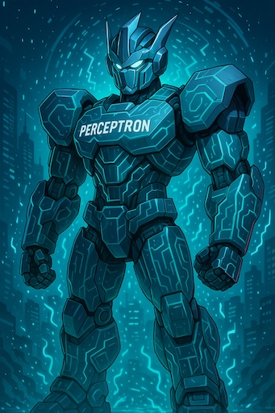
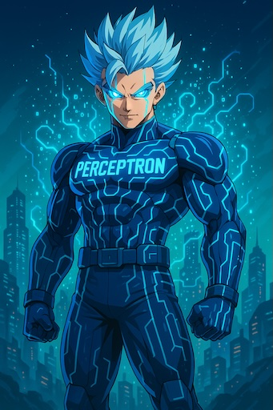
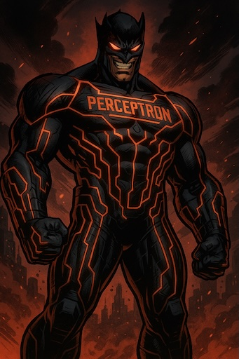
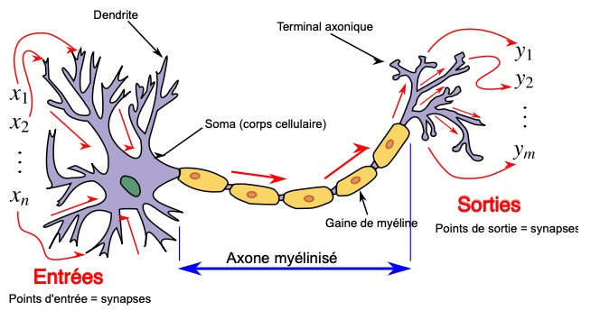

Noodle
NoodleChapitre 3 : Le perceptron ou la naissance d’un neurone numérique
Avant toute chose : non, le perceptron n’a aucun lien de parenté avec Megatron. Toute ressemblance avec la
franchise de science-fiction distribuée par Paramount Pictures et DreamWorks n’est donc due qu’au hasard… à
moins qu’il ne s’agisse d’un Super Saïyen ?
Ou bien encore d’un super-héros Marvel ?
  
Avouez-le : vous y avez pensé aussi ! Non ? 😄 Mais trêve de plaisanteries et revenons à la base : le neurone biologique.
Une cellule pour capter, décider, transmettre
Un neurone, c’est une cellule spécialisée avec trois zones clés :
- Dendrites : de multiples “antennes” qui reçoivent des signaux venant d’autres neurones.
- Soma (corps cellulaire) : un centre d’intégration où se cumulent les effets reçus.
- Axone : un long prolongement qui transmet un signal vers d’autres cellules, parfois très loin.
Ces trois parties dessinent déjà une logique : “capter, décider, transmettre”. Ces trois parties dessinent déjà une logique : “capter, décider, transmettre”. Ce principe s'appelle également l'inférence.
Source : Modèles du neurone biologique - Wikipédia
Mimétisme biologique
Le perceptron est l’un des premiers modèles de neurone artificiel conçu pour imiter le fonctionnement des neurones biologiques de façon simplifiée. Inventé par le psychologue américain Frank Rosenblatt en 1958, le perceptron est une brique fondamentale des réseaux de neurones modernes. Il a été conçu pour apprendre à partir d’exemples, en ajustant ses connexions internes pour minimiser l’erreur de ses prédictions.
Et si l’on reparlait maintenant de nos deux sentinelles du chapitre précédent ? Appelons-les S1 et S2. Sur le schéma ci-contre, elles sont représentées par les entrées à gauche du perceptron. Elles reçoivent des signaux et les transmettent au soma (corps cellulaire) du perceptron. Une fois les signaux reçus, le perceptron les intègre et décide du signal de sortie à envoyer.
Ci-dessous, voici notre premier véritable perceptron opérationnel avec ses deux entrées (S1, S2) et sa sortie (Alarme). L'état de l'alarme est représentée par la heatmap à droite.
La première chose à faire est de vérifier si nos sentinelles sont alertes !!! Retestez pour voir. Que se passe-t-il si seulement la sentinelle 2 déclenche son signal ? Problème, non ? On dirait bien que la deuxième sentinelle s’est endormie à son poste… 😄
Maintenant, lancez l’entraînement du perceptron pour qu’il apprenne à réagir correctement aux signaux de S1 et S2. Incroyable… presque magique, n’est ce pas ? 😉
Interprétation de l'entraînement: Le perceptron apprend à ajuster ses paramètres lors de l'entraînement. Sur la heatmap, il en résulte que la droite de décision (frontière entre le rouge et le vert) finit par se positionner de manière à séparer correctement les entrées (S1, S2): les points verts doivent être situés dans la partie verte et le point rouge dans la partie rouge.
Derrière le miroir...
"Toute technologie suffisamment avancée est indiscernable de la magie."
- Arthur C. Clarke
Cette citation, nous invite à passer à présent dans les coulisses pour appréhender la mécanique du perceptron. Voici donc sa représentation schématique générique:
Le perceptron est un modèle de neurone artificiel qui intègre des entrées pondérées, applique une fonction d'activation et produit une sortie. Mais comment cela fonctionne concrètement ? Voici la formule mathématique avec 2 entrées: \[ y = w_{x1} \cdot x1 + w_{x2} \cdot x2 + b \] avec :
- \( x1 \) : valeur d’entrée (de notre sentinelle 1 par exemple )
- \( x2 \) : valeur d’entrée (de notre sentinelle 2 par exemple )
- \( w_{x1} \) : poids (un réglage que le modèle peut modifier)
- \( w_{x2} \) : poids (un réglage que le modèle peut modifier)
- \( b \) : biais (un ajustement fixe que le modèle peut modifier)
- \( y \) : la valeur de sortie
Trop compliqué? Pas de panique! Simplifions encore un peu en ne prenant qu'une seule entrée pour faciliter la compréhension du principe de fonctionnement. Nous obtenons alors la formule simplifiée: \[ y = w_{x} \cdot x + b \] Cela ne vous rappelle-t-il pas quelque chose ? Oui, cela ressemble à s’y méprendre à la formule d’une fonction affine que vous avez normalement étudiée en mathématiques en classe de 3ᵉ. 😉 \[ \ y = a \cdot x + b \] C'est donc une simple équation de droite avec :
- \( x \) : la valeur d'entrée
- \( a \) : la pente de la droite
- \( b \) : l'ordonnée à l'origine
- \( y \) : la valeur de sortie
Faisons le parallèle avec l'entrée de notre perceptron:
La pente de la droite c'est le poids (ou "weight") :
- Plus le poids est important et plus la valeur d'entrée est amplifiée: la connexion est forte.
- Plus le poids est faible et plus la valeur d'entrée est atténuée: la connexion est faible.
- Le poids peut être positif ou négatif, ce qui influence la direction de l'activation.
Dans le cadre d'un neurone biologique, on pourrait dire que cela correspond à la sensibilité de la dendrite.
L'ordonnée à l'origine c'est le biais (ou bias):
- Plus le biais est important et moins le perceptron active facilement sa sortie.
- Plus le biais est faible et plus le perceptron active facilement sa sortie.
- Le biais peut être positif ou négatif.
Dans le cadre d'un neurone biologique, on pourrait dire que le biais correspond à la sensibilité d'activation du soma.
En résumé :
| Composant numérique | Élément biologique associé | Rôle |
|---|---|---|
| Poids d'une liaison | Dendrite / Synapse | Influence de chaque entrée |
| Biais du perceptron | Seuil du soma | Déclenchement ou non de l’activation |
À ce stade, notre perceptron sait déjà faire beaucoup : il reçoit des entrées, les pondère, les additionne, puis génère une sortie.
Nous avons cependant laissé une notion importante de côté pour l'instant: la fonction d'activation. Ici le perceptron utilise une fonction d'activation de type seuil qui simule le fonctionnement binaire d'une TLU:
- Si la valeur de sortie est supérieure ou égale à 0.5, alors le perceptron s'active et met sa sortie à 1.
- Sinon, il reste inactif et produit une sortie à 0.
Nous reviendrons sur la notion d'activation en détail plus loin car un perceptron peut faire bien plus.
En attendant, McCulloch et Pitts avaient donc raison avec leur neurone formel, véritable sentinelle de l’activation. Mais une question demeure : un neurone logique peut-il aller plus loin ? Est-il capable de résoudre des problèmes plus complexes qu’une simple porte logique OU? Et si on testait ses limites ?
Prêt pour le chapitre suivant? Voyons donc si notre neurone est vraiment à la hauteur...
Activité pratique de développement logiciel : Implémenter un perceptron en POO
BTS SIO option SLAM (Solutions Logicielles et Applications Métiers)
Objectif pédagogiqueMettre en pratique les concepts de programmation orientée objet (POO) à travers l’implémentation d’un perceptron simple, en respectant les principes vus en cours :
- Encapsulation (attributs privés + accesseurs/mutateurs).
- Organisation en classe.
- Fonction de calcul de sortie.
- Développer des composants logiciels réutilisables et testables.
- Utiliser les principes de la programmation orientée objet pour structurer le code.
- Appliquer des algorithmes d’apprentissage simples.
Connaissances de base en programmation orientée objet (POO).
Durée1 heures.
Matériel nécessaireUn ordinateur avec un éditeur de code (comme Visual Studio Code) et outils de compilation/Interprétation si nécessaire en fonction du langage.
Consignes- Choisissez le langage de votre choix : JavaScript, C++, Java, Python, PHP, Dart, etc.
- Créez une classe Perceptron avec les attributs suivants :
- poids : tableau/list des poids des entrées (par exemple deux valeurs si vous simulez deux sentinelles S1 et S2).
- biais : valeur numérique.
- sortie : valeur de la sortie calculée.
- Ajoutez les méthodes suivantes :
- Constructeur permettant d’initialiser les poids et le biais.
- Accesseurs (get) et mutateurs (set) pour les poids et le biais.
- Une méthode predict(inputs) :
- Calcule la somme pondérée des entrées.
- Ajoute le biais.
- Applique une fonction d’activation seuil (si somme ≥ 0.5 → sortie = 1 ; sinon sortie = 0).
- Retourne la valeur de sortie.
Travail à réaliser
- Implémentez la classe Perceptron dans le langage choisi.
- Instanciez un perceptron avec deux entrées (représentant S1 et S2).
- Testez différents cas :
- (0,0), (0,1), (1,0), (1,1) → comparez les sorties.
- Modifiez les poids et le biais à l’aide des mutateurs, puis observez comment la sortie change.
- Expliquez le rôle des poids et du biais dans la décision finale.